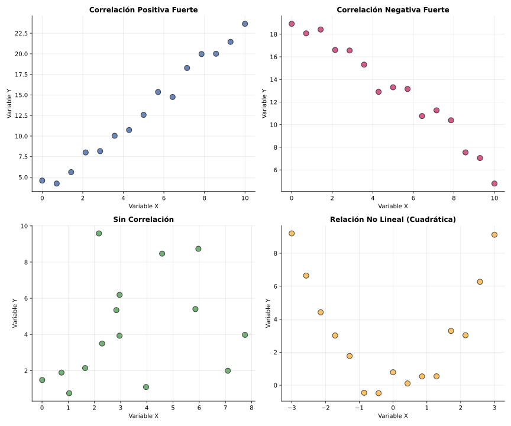

Sesión 1: Introducción a las Variables Bidimensionales
🎯 Objetivos de la Sesión
Comprender el concepto de variable bidimensional y su utilidad en ciencias sociales
Identificar y clasificar variables estadísticas bidimensionales
Organizar datos bivariantes en tablas de doble entrada
Representar gráficamente datos bidimensionales mediante diagramas de dispersión
📚 Contenidos Teóricos
1. ¿Qué es una Variable Bidimensional?
En estadística unidimensional estudiamos una sola variable en cada individuo de la población (por ejemplo, la altura de los estudiantes de una clase). Sin embargo, en muchas situaciones reales queremos analizar dos características simultáneamente para ver si existe alguna relación entre ellas.
Variable Bidimensional: Es aquella que asocia a cada individuo de una población un par ordenado de valores \((x, y)\), donde \(x\) e \(y\) son dos características diferentes que se miden simultáneamente.
Ejemplos de variables bidimensionales en ciencias sociales:
Economía: (Renta disponible, Gasto en consumo)
Sociología: (Nivel educativo, Salario anual)
Psicología: (Horas de estudio, Rendimiento académico)
Marketing: (Inversión en publicidad, Volumen de ventas)
Demografía: (Edad de la población, Esperanza de vida)
2. Clasificación de Variables Bidimensionales
Según la naturaleza de las variables que forman el par, podemos clasificarlas en:
Cuantitativa-Cuantitativa: Ambas variables son numéricas (ej: altura-peso, edad-salario)
Cuantitativa-Cualitativa: Una es numérica y otra categórica (ej: salario-género, edad-nivel educativo)
Cualitativa-Cualitativa: Ambas son categóricas (ej: género-preferencia política, distrito-medio de transporte)
Nota: En este curso nos centraremos principalmente en variables cuantitativas-cuantitativas, ya que permiten aplicar técnicas de regresión y correlación.
3. Tablas de Doble Entrada
Para organizar los datos de una variable bidimensional, utilizamos tablas de doble entrada (también llamadas tablas de contingencia o tablas bivariantes). Cada fila representa un individuo y las columnas representan las dos variables medidas:
Ejemplo: Relación entre años de experiencia laboral (X) y salario anual en miles de € (Y) de 8 trabajadores:
Trabajador
Experiencia (años) - X
Salario (miles €) - Y
1
2
22
2
5
28
3
3
24
4
8
35
5
6
30
6
10
40
7
4
26
8
7
33
4. Diagramas de Dispersión (Nube de Puntos)
La representación gráfica más importante para variables bidimensionales es el diagrama de dispersión. Consiste en un plano cartesiano donde:
En el eje horizontal (X) representamos la primera variable
En el eje vertical (Y) representamos la segunda variable
Cada par de valores \((x_i, y_i)\) se representa como un punto en el plano
¿Qué nos permite observar?
Si existe relación entre las variables (tendencia visible)
El tipo de relación: positiva, negativa o ausencia de relación
La intensidad de la relación: fuerte (puntos agrupados) o débil (puntos dispersos)
Valores atípicos (outliers) que se alejan del patrón general

Interpretación visual:
Correlación positiva: Cuando X aumenta, Y tiende a aumentar (nube ascendente)
Correlación negativa: Cuando X aumenta, Y tiende a disminuir (nube descendente)
Sin correlación: No se observa patrón claro, puntos dispersos aleatoriamente
Relación no lineal: Existe relación pero no es una línea recta (curva, parábola, etc.)
💪 Bloque 1: Refuerzo (10 min)
Activación de Conocimientos Previos - Estadística Unidimensional
Ejercicio 1.1: Calcula la media aritmética de los siguientes datos: 15, 18, 12, 20, 16, 14, 19
Paso 4: Dividir entre el número de datos:
\(S^2 = \frac{58}{5} = 11.6\)
Resultado: \(S^2 = 11.6\)
Ejercicio 1.3: Calcula la desviación típica de los datos anteriores
Ver solución
Solución paso a paso:
Paso 1: Recordamos la varianza calculada: \(S^2 = 11.6\)
Paso 2: Aplicar la fórmula de la desviación típica:
\(S = \sqrt{S^2} = \sqrt{11.6} = 3.41\)
Resultado: \(S = 3.41\)
Interpretación: En promedio, los datos se desvían 3.41 unidades respecto a la media (10).
📖 Bloque 2: Consolidación (20 min)
Trabajo Guiado: Variables Bidimensionales con Ejemplos de Ciencias Sociales
Ejercicio 2.1: Clasifica las siguientes variables bidimensionales según su tipo:
(Paro, Delincuencia) en diferentes regiones
(Edad, Preferencia de voto)
(Temperatura media, Consumo de energía)
(Nivel socioeconómico, Acceso a sanidad)
(Horas de formación, Productividad laboral)
Ver solución
Clasificación:
(Paro, Delincuencia): Cuantitativa-Cuantitativa (ambas se miden en porcentajes o tasas numéricas)
(Edad, Preferencia de voto): Cuantitativa-Cualitativa (edad es numérica, preferencia es categórica)
(Temperatura, Consumo energía): Cuantitativa-Cuantitativa (ambas son continuas y numéricas)
(Nivel socioeconómico, Acceso sanidad): Cualitativa-Cualitativa (si se categoriza como "Alto/Medio/Bajo" y "Bueno/Regular/Malo") o Cuantitativa-Cuantitativa si se miden numéricamente (renta, nº consultas)
Ejercicio 2.2: Construye una tabla de doble entrada con los siguientes datos de 10 estudiantes: Horas de estudio semanal (X) y Calificación en el último examen (Y):
Personalizar: Título "Horas de Estudio vs Calificaciones"
Etiqueta X: "Horas de Estudio Semanal"
Etiqueta Y: "Calificación en Matemáticas"
Análisis esperado:
Correlación positiva fuerte: Mayor dedicación → mejores calificaciones
Linealidad: La relación es aproximadamente lineal
Valores extremos: Estudiante con 11 horas tiene la nota más alta (9.5)
Consistencia: No se observan casos atípicos (estudiantes con muchas horas y nota baja, o viceversa)
Conclusión pedagógica: Los datos refuerzan la importancia del esfuerzo constante en el estudio para lograr buenos resultados académicos.
🚀 Bloque 4: Ampliación (5 min)
Debate: Interpretación Visual Preliminar
Pregunta de reflexión: Observando los diagramas de dispersión que habéis construido, ¿qué tipo de relación creéis que existe entre las variables? ¿Podéis adelantar si hay dependencia entre ellas?
Ver guía para el debate
Puntos clave para la discusión:
1. Identificación visual de patrones:
¿Los puntos forman alguna tendencia clara?
¿La nube es ascendente, descendente o no tiene dirección?
¿Los puntos están agrupados o muy dispersos?
2. Hipótesis sobre dependencia:
Temperatura-Turismo (Cíes): Parece haber dependencia fuerte → La temperatura influye directamente en la decisión de visitar las islas
Horas estudio-Notas: Relación clara → El esfuerzo se traduce en mejores resultados
3. Limitaciones de la interpretación visual:
No podemos cuantificar la fuerza de la relación solo mirando
Necesitamos herramientas numéricas (correlación) para medir objetivamente
Correlación no implica causalidad (lo veremos más adelante)
Avance de próximas sesiones: En las siguientes clases aprenderemos a medir numéricamente estas relaciones mediante la covarianza y el coeficiente de correlación, y a modelizarlas con ecuaciones de regresión.
📊 Resumen de la Sesión
✅ Hemos comprendido qué es una variable bidimensional y su importancia en ciencias sociales